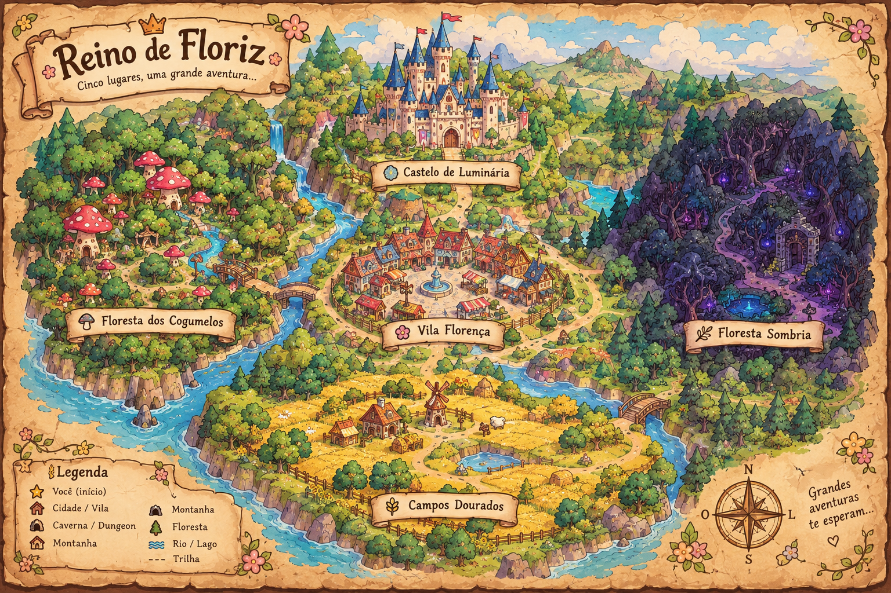

CONFIGURAÇÕES
Velocidade de exibição dos diálogos
Escolha seu protagonista

Selecione uma região diretamente no mapa.
COMO VOCÊ VAI REAGIR DIANTE DISSO?
FIM — REINO DE FLORIZ
O Mistério do Colar de Aurélia
A magia voltou a Floriz. Nila e Finn salvaram o reino, mas o segredo de Zyn permanece...
EM BREVE... CONTINUAÇÃO!